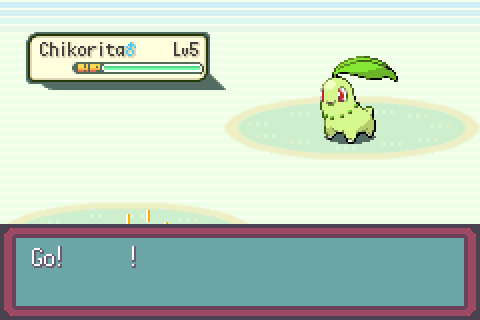
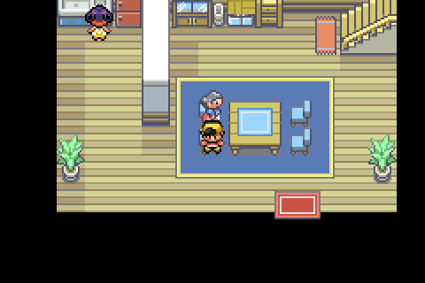
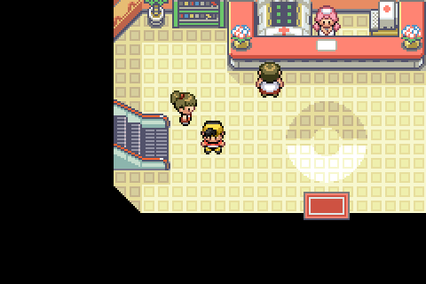

One observation left over from the sixth round, plus the sweep the round’s nurse defect set off. Captures are raw mGBA frames taken by tools/playtest/playtest.py. Full reasoning in docs/port/decisions.md, section D115. The round itself is D114.
Also, is silver meant to have a zigzagoon?
The Cherrygrove parties in src/data/trainers_crystaldust.party are all correct, and LoadWallyZigzagoon is reachable only from the debug menu, so the battle had to be identified first: the first fight, with Totodile started. CrystalDust’s rival scripts pass TUTORIAL_BATTLE_HEAL_AFTER (1) to trainerbattle_wintext, and battle_setup.c tested it as GetRivalBattleFlags() & RIVAL_BATTLE_TUTORIAL — where RIVAL_BATTLE_TUTORIAL is 3, the heal-after bit and the tutorial bit together. Emerald never passed heal-after on its own, so the loose test was safe there; Johto’s first rival fight passes exactly that, the battle came up with BATTLE_TYPE_FIRST_BATTLE, and SetUpBattleVarsAndBirchZigzagoon overwrote the opponent with Birch’s level 2 Zigzagoon. The test now asks for both bits.
until warp ok frames=67 value=256 shot rivalbattle2.ppm frame=7711

tools/playtest/scripts/d115.txt: Totodile started, so the rival has Chikorita, level 5D114’s blonde nurse was one entry of a class. Comparing every gObjectEventGraphicsInfo_* against CrystalDust’s found 118 of 279 carrying a different .paletteTag. A blanket revert would be wrong — expansion has palette tags CrystalDust never had (NPC_WHITE, NPC_BLUE, NPC_GREEN, NPC_PINK), and the FRLG-derived Kanto NPCs use them for their own art — so the rule agreed with the tester was: revert only where the art file is byte-identical to CrystalDust’s. If the pixels are theirs, the palette they were drawn against is theirs too. That is 80 entries, each given CrystalDust’s tag and its palette slot. The four npc_N palette files themselves are identical between the trees, so a tag means upstream what it means here.
Covered: most of the overworld people (Girl1, the Women, the Men, BugCatcher, Hiker, Sailor, Mom), the decoration dolls and cushions, the Kanto NPCs expansion had moved onto its own tags (Celio, Mr Fuji, the captain), and the rival’s mach bike. The remaining 38 have art that differs from CrystalDust’s, so their expansion tag may well be right for those pixels; they are left alone, and the reasoning is in the header of src/data/object_events/object_event_graphics_info.h.

NPC_4 → NPC_1